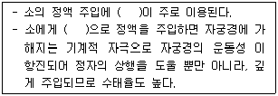
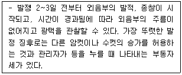
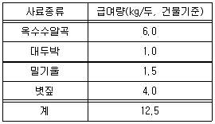
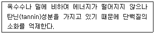

축산산업기사 (2016-10-01 기출문제)
1과목: 가축번식 육종학
1. 양적형질의 표현형을 기초로 한 유우의 유전능력 평가에서 유전적인 요인은?
- 목장의 효과
- 계절의 효과
- 부모의 효과
- 산차의 효과
(정답률: 89%)

2. 육용계의 산육능력과 관계가 깊은 것은?
- 산란강도
- 성장률과 체형
- 취소성
- 동기휴산성
(정답률: 76%)
3. 계란의 난형은 난형지수가 얼마일 때 가장 바람직한가?
- 82 ~ 86
- 78 ~ 82
- 72 ~ 76
- 66 ~ 70
(정답률: 80%)
4. 한우 암소의 개량 대상이 되는 형질 중 번식형질에 속하는 것은?
- 생시 체중, 이유시 체중
- 사료요구율, 체형과 외모
- 초산일령, 발정재귀일수
- 육질등급, 육량등급
(정답률: 82%)
5. 젖소의 경제형질로 보기 어려운 것은?
- 비유량
- 생산수명
- 체형과 외모
- 이유시 체중
(정답률: 65%)
6. 근친교배에 대한 설명으로 옳은 것은?
- 이형접합체의 비율이 증가한다.
- 각종 치사유전자와 기형이 나타나는 빈도가 높아진다.
- 가축의 경우 전형매교배가 가장 낮은 정도의 근친교배이다.
- 근친교배가 진행됨에 따라 근교계통이 육성되면 근교계통 간의 차이는 작아진다.
(정답률: 78%)
7. 유우의 경제형질들 중 유전력이 가장 낮은 형질은?
- 유량
- 유지방
- 유단백질
- 번식능력
(정답률: 70%)
8. 다음 중 ( )에 알맞은 내용은?

- 질내주입법
- 겸자법
- 질경법
- 직장질법
(정답률: 74%)
9. 극단으로 온도가 높거나 낮을 때 대부분 가축의 성성숙은 어떻게 변하는가?
- 촉진된다.
- 지연된다.
- 변함이 없다.
- 품종에 따라 다르다.
(정답률: 89%)
10. 일반적으로 소의 배란시간은?
- 발정 개시 후 8~10시간
- 발정 개시 후 11~12시간
- 발정 종료 후 12~14시간
- 발정 종료 후 22~25시간
(정답률: 67%)
11. 다음은 어떤 가축의 발정 징후인가?

- 돼지
- 말
- 소
- 산양
(정답률: 85%)
12. 수컷에서 나타나는 성성숙 현상이 아닌 것은?
- 정자 생산능력 완성
- 부생식선 발육
- 성욕의 발현과 교미, 사정 가능
- 발정발현
(정답률: 66%)
13. 다음의 육우 형질 중 반드시 후대검정이 필요한 형질은?
- 일당 증체
- 수소의 유량
- 12개월 체중
- 체형 평점
(정답률: 54%)
14. 육우의 왜소증(dwarfism)은 정상우에 대하여 열성이다. 정상우(DD)와 왜소증우(dd)가교배하였을 경우 F1의 표현형과 유전형을 바르게 표시한 것은?
- 정상(DD)
- 정상(Dd)
- 왜소(Dd)
- 왜소(dd)
(정답률: 82%)
15. 젖소의 개량 목표에 대한 설명으로 옳지 않은 것은?
- 생산수명의 단축
- 번식능률의 향상
- 두당 우유 생산량의 증가
- 양호한 체형과 외모
(정답률: 76%)
16. 동물의 성주기에 대한 설명으로 옳지 않은 것은?
- 개의 임신기간은 산양보다 짧다.
- 고양이는 교미자극 후 보통 24~30시간에 배란이 일어난다.
- 사슴의 번식계절은 일조시간이 짧아지는 시기로 우리나라의 경우에는 9~2월경에 해당
- 우리나라에서 말은 단일성 번식동물로 번식계절이 10~12월이다.
(정답률: 76%)
17. 주로 임신 말기에 유산하는 병은?
- 브루셀라병
- 비브리오병
- 트리코모나스
- 렙토스피라
(정답률: 85%)
18. 한우의 후대검정 시 배장근 단면적과 근내지방도 조사 부위는?
- 최후 흉추와 제1요추 사이
- 제1요추와 제2요추 사이
- 제2요추와 제3요추 사이
- 최후 경추와 제1흉추 사이
(정답률: 63%)
19. 돼지의 주요 경제형질 중 저도의 유전력을 가지는 형질은?
- 한배새끼수
- 사료요구율
- 등지방 두께
- 배장근 단면적
(정답률: 69%)
20. 선발의 효과를 크게 할 수 있는 방법은?
- 유전적 변이를 크게 한다.
- 세대간격을 길게 한다.
- 선발의 정확도를 작게 한다.
- 선발강도를 작게 한다.
(정답률: 72%)
2과목: 가축사양학
21. 암탉의 번식기관 중 정자와 수정이 이루어지는 부위는?
- 난관누두부
- 난백분비부
- 협부
- 자궁
(정답률: 64%)
22. 고급육을 목표로 하는 비육우에서 단백질 이용에 관한 설명으로 틀린 것은?
- 요소를 이용하여 단백질을 합성할 수 있다.
- 반추위미생물에 의해 본격적인 사료단백질의 분해가 일어난다.
- 사료의 단백질은 대부분 소장에서 흡수된다.
- 체중이 증가함에 따라 사료 중의 단백질 함량을 증가시켜야 한다.
(정답률: 47%)
23. 병아리를 기르는 육추사 건축상의 합당한 조건이 아닌 것은?
- 보온, 환기, 채광이 잘 되도록 할 것
- 청소와 소독에 편리하도록 할 것
- 사양관리에 편리하도록 설계할 것
- 화재의 위험과 관계없는 내부 시설물은 인화성 재료를 사용할 것
(정답률: 88%)
24. 다음 중 영양 가치에 따른 사료의 분류로 옳은 것은?
- 조사료, 농후사료, 특수사료
- 단백질 사료, 전분질 사료, 지방질 사료
- 식물성 사료, 동물성 사료, 광물성 사료
- 특수목적사료, 액상사료, 고상사료
(정답률: 69%)
25. 젖소 TMR 농장에서 원료 구매를 결정하는 중요한 수단은 영양소 단위당 가격인데 만약 대두박(조단백 함량 40%) 및 면실박(조단백 함량 40%)의 톤당 가격이 200000원 및 180000원인 경우 이때 대두박 및 면실박의 조단백질 kg당 가격은?
- 대두박 500원, 면실박 450원
- 대두박 500원, 면실박 550원
- 대두박 600원, 면실박 450원
- 대두박 600원, 면실박 550원
(정답률: 69%)
26. 다음 중 필수지방산이 아닌 것은?
- Lecithin
- Arachidonic acid
- Linolenic acid
- Linoleic acid
(정답률: 72%)
27. 우지와 같은 지방을 사료에 과도하게 첨가할 경우 일어날 수 있는 현상이 아닌 것은?
- 지방이 조섬유 입자를 피복하여 반추미생물에 의한 분해가 감소
- 미생물에 대해 독성을 나타냄으로써 미생물 균총 변화
- 미생물의 세포막에 흡수되어 미생물의 작용을 억제
- 지방산과 반추위내 음이온과 결합하여 불용성의 비누 형성
(정답률: 63%)
28. 다음 중 어린 병아리의 첫 모이 주기 전 사양관리에 대해서 잘못 설명한 것은?
- 병아리 입추 시 어미와 떨어진 스트레스가 심하므로 가급적 병아리끼리 분산되지 않도록 관리한다.
- 케이지 육추 시에는 입추실 온도가 32도, 평사 육추 시에는 삿갓 내 온도가 35도가 되도록 한다.
- 실내의 상대습도는 60~70%를 유지시켜야 한다.
- 물은 실온과 비슷한 16~20도의 물을 공급한다.
(정답률: 66%)
29. 산란계 사양 시 30도 이상 고온에서 나타나는 현상이 아닌 것은?
- 피부온도 상승
- 호흡수 증가
- 사료섭취량의 증가
- 음수량의 급격한 증가
(정답률: 89%)
30. 다음 중 지용성 비타민과 수용성 비타민의 비교 설명이 잘못된 것은?
- 수용성 비타민은 단지 C.H.O만을 함유하고 있는데 반면에 지용성 비타민은 이 세 원소 외 N.S.CO를 함유하고 있다.
- 지용성 비타민은 동물 체내에서 비타민으로 전환될 수 있는 전구체의 형태로 식물 조직에 존재할 수 있다.
- 지용성 비타민은 전적으로 분을 통해 배설되며 수용성 비타민은 분에 존재할 수 있으나 주로 뇨를 통해 배설한다.
- 반추미생물은 수용성 비타민을 합성할 수 있으며 미생물에 의해 합성되는 유일한 지용성 비타민은 비타민 K이다.
(정답률: 53%)
31. 한우 농가자가 TMR사료에 다음과 같은 원료사료를 사용할 경우 조사료 : 농후사료 비율은?

- 28 : 72
- 30 : 70
- 32 : 68
- 34 : 66
(정답률: 68%)
32. 다음 가축사양표준 중 최초 발간판을 기준으로 그 시기가 가장 빠른 것은?
- 한국사양표준
- NRC 사양표준
- 볼프-레만(Wolff-Lehmann) 사양표준
- 암스비(Armsby) 사양표준
(정답률: 73%)
33. 다음은 어떤 곡류사료에 대한 설명인가?

- 보리
- 연맥
- 호밀
- 수수
(정답률: 68%)
34. 좋은 육계병아리의 구비조건이 아닌 것은?
- 성장속도가 빨라야 한다.
- 사료의 이용성이 높아야 한다.
- 깃털의 성장이 느려야 한다.
- 도체율이 높아 산육능력이 좋아야 한다.
(정답률: 85%)
35. 산란계의 단백질 이용 효율은 얼마 정도인가?
- 약 55%
- 약 70%
- 약 80%
- 약 85%
(정답률: 47%)
36. 산란계 사료의 총에너지가 4000kcal, 분에너지가 800kcal, 뇨에너지가 300kcal, 그리고 열량증가가 600kcal 였을 때 외관상 대사에너지는 얼마인가?
- 3200kcal
- 2900kcal
- 2600kcal
- 2300kcal
(정답률: 62%)
37. 배합사료는 몇 종 이상의 단미사료를 혼합한 것을 말하는가?
- 2종 이상
- 3종 이상
- 4종 이상
- 5종 이상
(정답률: 79%)
38. 갈색산란계, 사료의 일반성분을 분석했을 때 수분이 12%, 조지방이 4%, 조단백질이 17%, 조섬유 7%, 조회분 6%이라면 가용무질소물은 몇 %인가?
- 34%
- 44%
- 54%
- 64%
(정답률: 61%)
39. 가축의 임신기간 중 영양소의 공급이 제일 많아야 하는 시기는?
- 임신초기
- 임신중기
- 임신말기
- 전체기간 중 비슷함
(정답률: 73%)
40. 소의 젖 생산에 필요하여 반드시 사료에 포함해 주어야 하는 비타민만으로 나열한 것은?
- 비타민 A, B2
- 비타민 A, D
- 비타민 B군, K
- 비타민 B2, E
(정답률: 68%)
3과목: 축산경영학
41. 다음 중 대차대조표에서 자산항목에 해당되지 않는 것은?
- 토지
- 건물 및 시설
- 사료
- 자본
(정답률: 36%)
42. 양계경영의 수익성을 극대화하기 위한 방안이 아닌 것은?
- 폐사율을 감소시킨다.
- 품질 및 상품가치의 균일성을 유지시킨다.
- 생산능력을 향상시킨다.
- 사료 요구율을 높인다.
(정답률: 80%)
43. 우유 생산비 중 감가상각비로 계산하는 비용은?
- 가축비
- 사료비
- 재료비
- 노동비
(정답률: 69%)
44. 투자에 대한 순현재가치가 0으로 수렴될 때까지의 할인율을 무엇이라 하는가?
- 시장이자율
- 편익비용비율
- 내부수익률
- 감가상각률
(정답률: 45%)
45. 복합경영에 대한 설명으로 옳지 않은 것은?
- 노동력을 효율적으로 이용할 수 있다.
- 기계 및 시설을 효율적으로 이용할 수 있다.
- 생산물의 동일성에 의하여 시장정보의 유리성이 있다.
- 수입원이 다양하고 평균화됨으로써 자금회전이 원활하다.
(정답률: 75%)
46. 다음 중 가변비용에 해당되는 것은?
- 사료비
- 감가상각비
- 자기토지지대
- 고정자본이자
(정답률: 77%)
47. 다음 중 토지의 경제적 특성이 아닌 것은?
- 불가증성
- 불이용성
- 불가동성
- 불소모성
(정답률: 75%)
48. 자산 가치 평가기법 중 평가 시의 시가(현행원가)를 기준으로 자산을 평가하는 것은?
- 원가기준법
- 감가상각법
- 저가기준법
- 시장가치법
(정답률: 64%)
49. 상업농시대에 있어서 축산경영의 목표로 적합한 것은?
- 자급자족
- 이윤의 극대화
- 생산의 최대화
- 현상유지
(정답률: 82%)
50. 비슷한 경영규모, 경영형태의 많은 축산농가를 조사하고 그 평균치를 비교기준으로 정한 뒤 진단농가와 비교하는 방법은?
- 표준계획법
- 선형계획법
- 부분예상법
- 직접비교법
(정답률: 67%)
51. 다음 지표 중 축산경영분석의 성과지표가 아닌 것은?
- 가족노동보수
- 기술계수
- 축산자본수익
- 토지자본수익
(정답률: 56%)
52. 다음 중 노동생산성을 산출하는 방식은?
- 총생산량/토지면적
- 총생산량/투하자본
- 총생산량/투하노동량
- 총생산량/생산두수
(정답률: 79%)
53. 비육돈 생산비 중 가장 큰 비중을 차지하는 비목은?
- 위생치료비
- 고용노력비
- 감가상각비
- 사료비
(정답률: 83%)
54. 다음 중 단기에서 완전경쟁하에서의 이윤 극대화 조건이 아닌 것은?
- 한계비용=한계수입
- 균형점 근방에서 한계비용의 상승
- 균형점에서 가격이 평균가변비용보다 높을 것
- 균형점 근방에서 평균비용의 하락
(정답률: 49%)
55. 자기자본이 100만원, 부채가 50만원인 축산농가의 부채비율은?
- 50%
- 100%
- 150%
- 200%
(정답률: 84%)
56. 다음 중 가족노동력의 장점이라고 할 수 없는 것은?
- 노동성과에 대한 책임부담이 없다.
- 잉여노동력을 이용할 수 있다.
- 시간에 구애받지 않고 필요할 때 이용할 수 있다.
- 가축사양 시 창의적이고 책임을 다한다.
(정답률: 78%)
57. 다음 중 축산경영분석의 항목에 해당되지 않는 것은?
- 생산비율
- 가족노동보수
- 투자자본수익
- 축산순수익
(정답률: 39%)
58. 다른 생산물의 생산량을 증가시키지 않고 한가지 생산물의 생산량을 증가시킬 수 있다면 이들 두 생산물은 어떤 관계를 의미하는가?
- 경합생산물
- 보합생산물
- 보완생산물
- 결합생산물
(정답률: 50%)
59. 다음 중 축산조수입에서 주산물 수입이 아닌 것은?
- 낙농경영에서 젖소 송아지 판매액
- 번식우경영에서 한우 송아지 판매액
- 비육돈경영에서 비육돈 판매액
- 산란계경영에서 계란 판매액
(정답률: 77%)
60. 다음 중 고정자본재가 아닌 것은?
- 사료
- 축사
- 트랙터
- 배수시설
(정답률: 77%)
4과목: 사료작물학
61. 임간초지에 대한 설명으로 틀린 것은?
- 대상지의 경사도는 45도 이상이 최적이다.
- 임간초지 조성은 불경운초지 개량에 해당한다.
- 겉뿌림으로 파종하여 파종적기는 8월 중·하순경이다.
- 토양수분을 잘 보존할 수 있는 유기물 함량이 많은 토양이 유리하다.
(정답률: 70%)
62. 우리나라의 농업부산물 중 조사료로 가장 많이 이용하는 것은?
- 볏짚
- 보릿짚
- 옥수수대
- 고구마 줄기
(정답률: 75%)
63. 남방형 목초에 해당되는 초종은?
- 티머시
- 버뮤다 그라스
- 오차드 그라스
- 페레니얼 라이그라스
(정답률: 52%)
64. 화본과 목초에 대한 설명으로 옳은 것은?
- 잎은 호생하거나 나선상으로 착생한다.
- 줄기는 포복형, 직립형 및 덩굴형이 있다.
- 뿌리는 수근계를 이루며 2차 지근과 부정근들로 영구근군을 형성한다.
- 화이트 클로버, 레드 클로버, 오차드 그라스 등이 대표적 목초이다.
(정답률: 58%)
65. 초지농업에 대한 설명으로 틀린 것은?
- 인간이 이용하지 못하는 부분을 이용하여 식량을 생산하므로 인간과의 식량경합이 적다
- 유렵의 윤작농업의 경우, 초지농업은 지력증진과 토지 생산성을 유지 향상하기 위한 방법으로 이용되어 왔다.
- 초지농업에서는 가축의 배설물을 유기질 비료로 이용하므로 생산성 면에서 화학비료와는 다른 효과를 나타낸다.
- 기후나 토양이 열악한 지역에서는 목초의 적응성이 아주 낮아 초지농업을 할 수 없다.
(정답률: 68%)
66. 사일리지용 옥수수를 파종할 때 가장 알맞은 1ha당 재식밀도는?
- 약 30000주
- 약 50000주
- 약 70000주
- 약 100000주
(정답률: 61%)
67. 옥수수 사일리지가 후숙작용까지 끝나고 적당한 산미와 방향을 가져 가축에 급여할 수 있게 완성되기까지 최소 며칠이 소요되는가?
- 30~40일
- 50~60일
- 70~80일
- 90~100일
(정답률: 56%)
68. 사일리지를 감정하고자 입에 넣었을 때 가장 우량품질인 것은?
- 무미한 것
- 떫은 것
- 상쾌한 산미인 것
- 쓴 것
(정답률: 83%)
69. 옥수수 사일리지 조제 시 재료의 절단 길이로 가장 적합한 것은?
- 1~2cm
- 7~8cm
- 10~15cm
- 20~25cm
(정답률: 63%)
70. 목초의 하고현상에 대한 설명으로 옳은 것은?
- 북방형 목초에서 많이 발생한다.
- 사료작물의 생산성이 크게 개선된다.
- 하고현상의 주원인은 많은 강수량이다.
- 국내에서는 4월 말부터 5월경에 주로 발생한다.
(정답률: 66%)
71. 사일리지 발효에 가장 효과적인 미생물은?
- 젖산균
- 낙산균
- 초산균
- 진균
(정답률: 75%)
72. 화본과 목초 중 우리나라 환경에서 1년생 또는 월년생으로 취급되는 초종은?
- 레드톱
- 톨 페스큐
- 오차드 그라스
- 이탈리안 라이그라스
(정답률: 65%)
73. 혼파초지의 장점이 아닌 것은?
- 가축 영양상 영양가의 균형이 잡혀 좋다.
- 초지 이용관리가 매우 용이해진다.
- 근계가 다르므로 땅속의 양분을 효율적으로 이용할 수 있다.
- 상번초와 하번초의 혼생으로 공간 경합이 적어진다.
(정답률: 57%)
74. 화본과 목초에 있어서 1번초로 가장 적당한 예취 시기는?
- 출수 초기
- 영양생장기
- 개화 말기
- 결실기
(정답률: 77%)
75. 다음 중 사료용 옥수수의 파종시기로 알맞게 설명한 것은?
- 토양 온도가 0도정도가 되면 파종한다.
- 토양 온도가 5도정도가 되면 파종한다.
- 토양 온도가 10도정도가 되면 파종한다.
- 토양 온도와 관계없이 파종한다.
(정답률: 65%)
76. 종자의 크기가 작은 목초에 알맞은 파종상이 갖추어야 할 조건이 아닌 것은?
- 하층표토와 상층표토에 관계없이 수분함량이 충분히 있어야 한다.
- 목초가 파종되는 표토는 부드럽고 입상이어야 하나 너무 곱거나 가루모양이어서는 안된다.
- 종자가 파종되는 바로 밑의 토양은 매우 부드러워야 한다.
- 토양의 경운층은 토양수분과 양분이 위로 이동할 수 있도록 미경운된 하층심토와 직접 접촉되고 연결되어 있어야 한다.
(정답률: 67%)
77. 체중 500kg 정도의 젖소를 전량 방목에 의하여 생초를 급여할 경우 1일 적정 채식량은?
- 30~40kg
- 60~75kg
- 90~100kg
- 110~125kg
(정답률: 60%)
78. 사료용 옥수수를 5ha 재배하려면 적정한 파종량은?
- 50~65kg
- 85~100kg
- 125~150kg
- 165~180kg
(정답률: 57%)
79. 사료작물의 곤포 사일리지 조제의 장점이 아닌 것은?
- 초기 투자가 많이 든다.
- 건초에 비해 수확 시 손실을 줄일 수 있다.
- 볏짚 수거이용률을 높일 수 있다.
- 기상변화에 대처할 수 있는 가변적인 생산체계이다.
(정답률: 64%)
80. 사료용 옥수수의 병충해가 아닌 것은?
- 조명나방
- 멸강나방
- 거세미
- 엔도파이트 진균
(정답률: 64%)